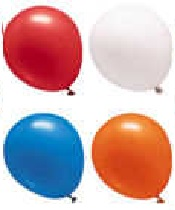

ÇIKARMA İŞLEMİ
Önce çıkarma ne demek bunu öğrenelim.
Çıkarma işlemi: Belli bir sayıdan daha küçük değerli bir sayı çıkardığımız zaman geriye kalan sayıyı bulmak için yaptığımız işten çıkarma işlemidir. Şimdi bunu daha iyi anlayabilmek adına birbirinden farklı örnekler yapalım. Böylece çıkarma işlemi nasıl yapılıyor çok daha iyi bir şekilde anlamış olacağız.
Örnek: Ali'nin elinde 4 tane balonu bulunuyordu. Ancak Ali'nin elindeki bir balon patladı. O zaman Ali'nin elinde kaç tane balon kalır?
Ali'nin elindeki balonlardan 1 tanesi patlarsa o zaman Ali'nin elinde 3 tane balonu kalır. Çünkü bu durumda 4 balondan bir tane balon eksiltiriz. Yani çıkarma işlemi yaparız. Şimdi bunu işlem haline getirelim ve nasıl yaptığımıza bakalım.
4 - 1 = 3 balon

Yandaki Basamaktan Ödünç Almadan Çıkarma İşlemi
Çıkarılan rakam, çıkarılan rakamdan daha büyük olduğunda, bir sonraki sütunda (solda) üstteki sayıdan yardım aramamız gerekir.
Örneğin:Çıkarma işlemini yapalım: 32-17 17'yi 32'nin altına yerleştirin ki aynı sütunda olanlar yani 7 ve 2 çakışsın. Birleri çıkarmaya başlayın: 2 - 7, ancak 2, 7'den büyük olduğu için, üst sayıdaki bir sonraki sütundan “ödünç almanız” gerekir.
"30" dan bir on alınır ve birler yerindeki 2'ye, 2 yerine 12 yapmak için verilir. Ancak 30'dan 10 (10'larda 3) alındığından, geriye sadece 20 kalır.
Şimdi 12-7 = 5 çıkartabilirsiniz.
Onlar sütununu çıkarın: 2-1 = 1'dir.
12 7 -_ 5
Eksilen -> 12
Çıkan -> 7
Kalan -> 5
Doğru matematiksel kelime dağarcığını kullanmak, çocuğunuzu kelime problemlerini çözmeye alıştıracak ve okulda duyacakları kelime türlerine aşina olmasını sağlayacaktır.
Çıkarma ile ilgili birçok matematiksel kelime de var. Çocuğunuz size bir çıkarma hesaplamasının cevabını söylediğinde, bunu fark olarak görmeye teşvik edin. Örneğin, '7 - 3 = 4', '7 ile 3 arasındaki fark 4' olarak okunabilir.
Çocuğunuz bir sorun üzerinde çalışıyorsa ve cevabı açıklarsa, sorunu nasıl çözdüklerini açıklamalarını isteyin. Yöntemlerini açıklamalarına yardımcı olmak için resimler veya diyagramlar çizebilirler.